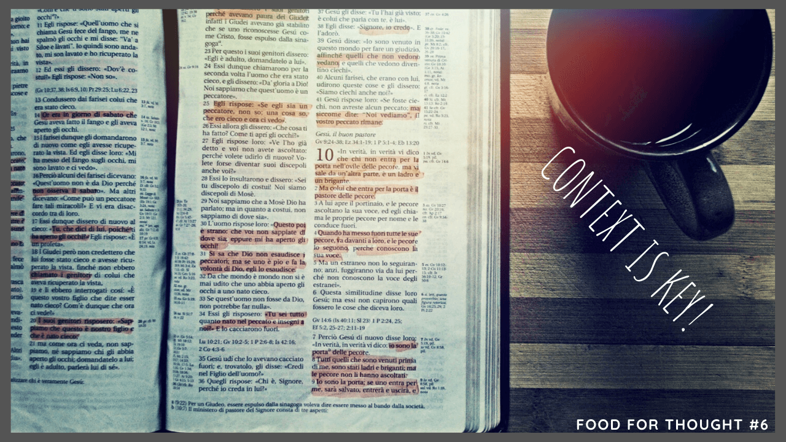
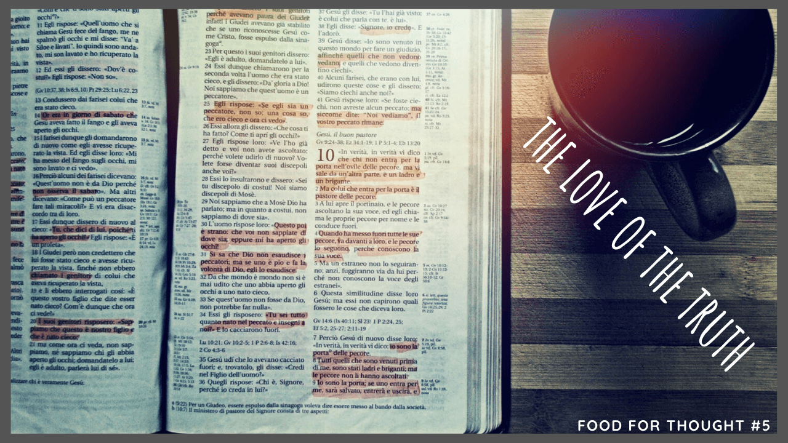
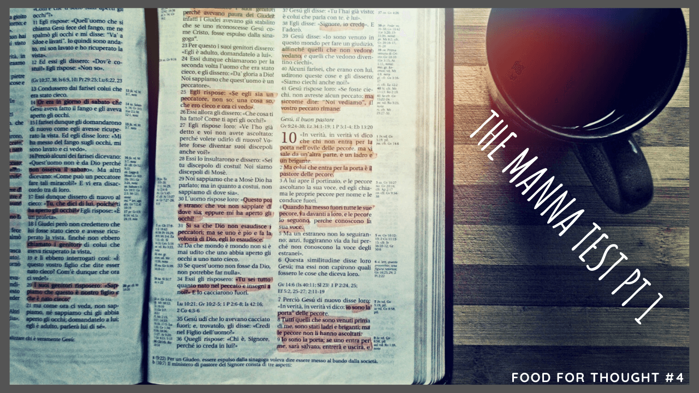

Context is key! Wisdom & truth lies in the details. As does our salvation.
#5 - The love of the Truth is like loving good food • 2 min read
In 2 Thessalonians 2:9-10 Paul expounds to us what will happen with believers in the end times, how they will forsake the love of the Truth, and delight in wrongdoing.
#4 - The whole Word, but half obedient • 1 min read
The whole Word, but half obedient, we are called to be obedient to Christ to teach us dependence on Him.
#3 - Maturity is a tough thing • 1 min read
Maturity is a tough thing, but we are called in Christ to Christian maturity. Is Jesus the centre of your hope?